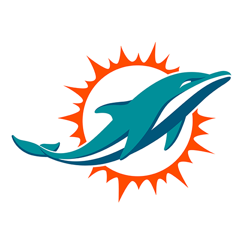

Próximo

🎯 Picks del modelo
3 de 6 bajo la línea (79, 57, 107, 27, 104, 44). Modelo: 53.0; MIA defiende el pase en la media.
3 y 6). Modelo: 3.7. Muestra corta.
Registros: −2, 24, 33. Modelo: 14.1.
MIA cubre 52%, NYJ 48%. Total 39.5: over 50%. Sin ventaja y con compresión divisional.
🏈 Anotadores · ≥1 TD
Fuente: results.json → top_td (frecuencia simulada, TD lanzado no cuenta).
📊 Ganador (60 min)
📐 Spread
🔢 Total de puntos
⚖️ Puntos esperados
👤 Props de jugador 37
Mostrar/ocultar lista (orden original)
Postura: P≥60% / ≤40% con muestra mínima. Fuente: reporte completo (postura, muestra) + MIA-NYJ/props_eval.csv (P(over) exacta). Sin precios.
📈 Forma y rendimiento
| 10-11 | vs CIN | 24-31 | D |
| 10-04 | @ MIN | 10-15 | D |
| 09-27 | vs KC | 10-24 | D |
| 09-20 | @ SF | 13-35 | D |
| 09-13 | @ LV | 13-27 | D |
| 01-04 | @ NE | 10-38 | D |
| 12-28 | vs TB | 20-17 | V |
| 12-21 | vs CIN | 21-45 | D |
| 12-16 | @ PIT | 15-28 | D |
| 12-07 | @ NYJ | 34-10 | V |
| 10-18 | @ NE | 19-26 | D |
| 10-11 | vs CLE | 17-12 | V |
| 10-04 | @ CHI | 12-23 | D |
| 09-27 | @ DET | 24-31 | D |
| 09-20 | vs GB | 17-20 | D |
| 09-13 | @ TEN | 23-10 | V |
| 01-04 | @ BUF | 8-35 | D |
| 12-28 | vs NE | 10-42 | D |
| 12-21 | @ NO | 6-29 | D |
| 12-14 | @ JAX | 20-48 | D |
Fuente: ESPN team schedule (temporada actual y anterior + playoffs). Solo partidos anteriores al kickoff. «·P» = playoffs.
🩺 Contexto y bajas
NFL · Semana 7 · dom 25 oct 2026 (CBS), 11:00 Monterrey · MetLife Stadium, East Rutherford · Soleado, 63 °F (AccuWeather vía ESPN; viento N/D) · inactivos oficiales ~90 min antes del kickoff
Modelo R10 v2: NYJ gana con 63.4% (empate en 60 min repartido; 4.8% de empates). Marcador medio MIA 17.6 – NYJ 22.1; total medio 39.7 contra 39.5 del mercado. Línea usada: NYJ -4.5, total 39.5 (mediana de casas, The Odds API). Con el ancla al mercado, MIA +4.5 cubre 52.0% y el over sale 49.8%. Sin ancla, el modelo veía MIA 19.0 – NYJ 22.2 (total 41.2).
Línea usada (mediana de casas US vía The Odds API): NYJ -4.5, total 39.5. DK vía ESPN: NYJ -4.5, total 39.5; apertura DK: -2.5 local, total 41.5. QB titulares: Malik Willis (MIA) y Geno Smith (NYJ). Bajas y cuestionables según el reporte oficial NFL del viernes 23 (ver tarjetas).
Días entre fechas UTC de partido.
MIA (inactivos oficiales pendientes; se usa el reporte del viernes 23 + IR/suspensiones de ESPN): excluidos del modelo De'Von Achane (Injured Reserve), Ryan Miller (NO_ROSTER)
NYJ (inactivos oficiales pendientes; se usa el reporte del viernes 23 + IR/suspensiones de ESPN): excluidos del modelo Arian Smith (Injured Reserve)
Ataque MIA frente a la defensa de NYJ (S=0.0067): TD/serie x1.007, Y/A x1.005, FG x1.002, sack x0.990 · Joseph Ossai (DE DL titular (Out; 2 PJ, 4.5 tk/p, 0 sacks), w 0.02 × jugó 2/6 = 0.0067)
Ataque NYJ frente a la defensa de MIA (S=0.004): TD/serie x1.004, Y/A x1.003, FG x1.001, sack x0.994 · Reese Taylor (CB rotación (Out; 2 PJ, 1.0 tk/p, 0 sacks), w 0.01 × jugó 2/5 = 0.004)
Método: peso por rol × fracción de partidos jugados en la muestra (no se descuenta dos veces lo que ya faltó). Supuesto del analista, no una tasa observada.
Titular del último partido de la muestra y sin designación de lesión en ESPN.
Titular del último partido de la muestra y sin designación de lesión en ESPN.
Bajas de OL de NYJ (T Max Mitchell fuera; G Parham cuestionable) y del LB Mauigoa. Cuestionables modelados como activos (bandera q); fuera/dudosos excluidos.
Pase: 6.53 Y/A, 2 TD y 4 INT, passer rating 68.4. Carrera: 4.87 YPC y 5 TD por tierra. 3er down 41.3%.
Permite 7.79 Y/A y 115.0 de passer rating, 3.66 YPC, 11 TD de pase y 4 por tierra; 14 sacks recibidos y 8 entregas.
Pase: 7.55 Y/A, 7 TD y 1 INT, passer rating 101.8. Carrera: 3.59 YPC y 4 TD por tierra. 3er down 35.1%.
Permite 6.31 Y/A y 93.1 de passer rating, 4.19 YPC, 9 TD de pase y 4 por tierra; 19 sacks recibidos y 4 entregas.
Guion probable. Partido de carrera, de pocos puntos. NYJ controla con su defensa y Geno Smith en pases cortos. MIA busca sostener con Gordon. Qué rompe el pronóstico. Que Hall no juegue (Braelon Allen toma la carga) o que Willis encuentre jugadas largas. Una entrega de Geno cambia el partido.
Fuente: reporte completo publicado (secciones «Bajas y contexto», «Game Prediction»); solo el análisis.
🔥 Rachas
La mayor de las rachas calculadas abajo (antes del kickoff; puede cruzar temporadas).
Calculado de ESPN team schedule (marcadores finales). Rachas ATS y Over/Under: n/d (el calendario de ESPN no trae líneas históricas; no se inventan). Local/visita según la designación de ESPN.
Modelo: nfl_analisis/2026-10-25/partidos/MIA-NYJ/results.json · reporte completo: nfl/2026-10-25/mia-nyj/reporte/index.html · ESPN descargado 2026-10-24T05:49:31Z. Probabilidades = estimaciones del modelo, no calibradas. Solo probabilidades del modelo.